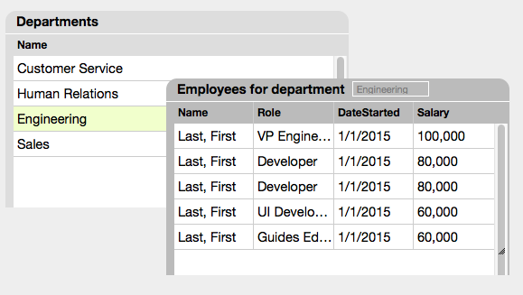

User guide
What is TuffDataList
TuffDataList is a Javascript/jQuery plugin you can use to create data lists in a web application.

You can see TuffDataList in action at
demo.
Features
- You can drag the lists to any position on the screen.
- You can resize the lists.
- When you resize a data column, TuffDataList adjusts the header. When you resize a header, TuffDataList adjusts the data column.
- When you scroll a list, the header stays fixed in place.
- When you click or drag a list, it goes above other lists to the top layer on the page.